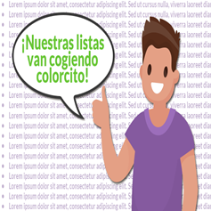
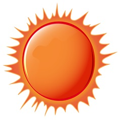
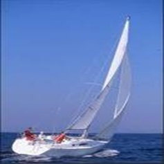

LISTADO DE TRABAJOS
Página con enlaces a varios trabajos.

EUSKADI
Página de las provincias del Pais Vasco.
LISTA DE AFICIONES
Ejercicio de listas.
PARTIDOS POLÍTICOS
Ejercicio con marcos.
LISTAS
Trabajo de listas usando jerarquía de estilos.

ESTILOS PROPIOS
Ejercicio usando estilos creados por el usuario.

EFECTOS SOLARES
Ejercicio usando estilos para dar características de formato.

MI VELERO
Ejercicio de superposiciones usando estilos.